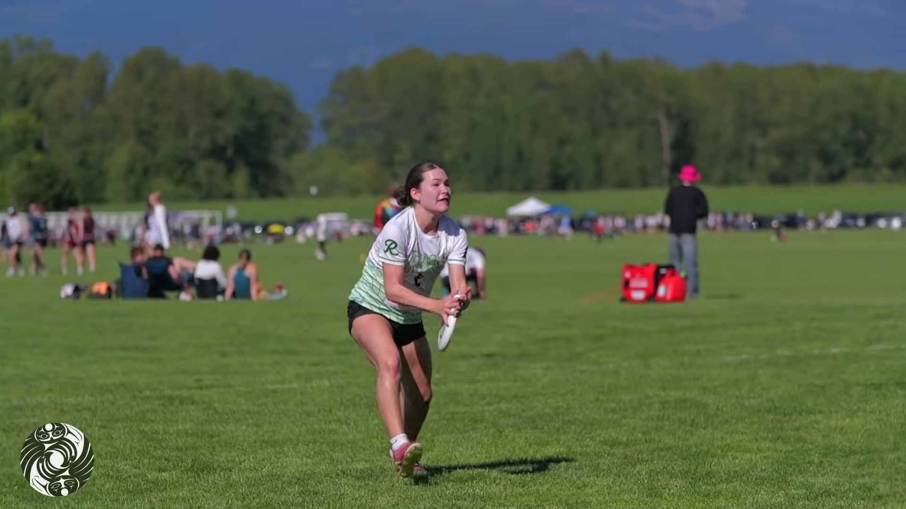
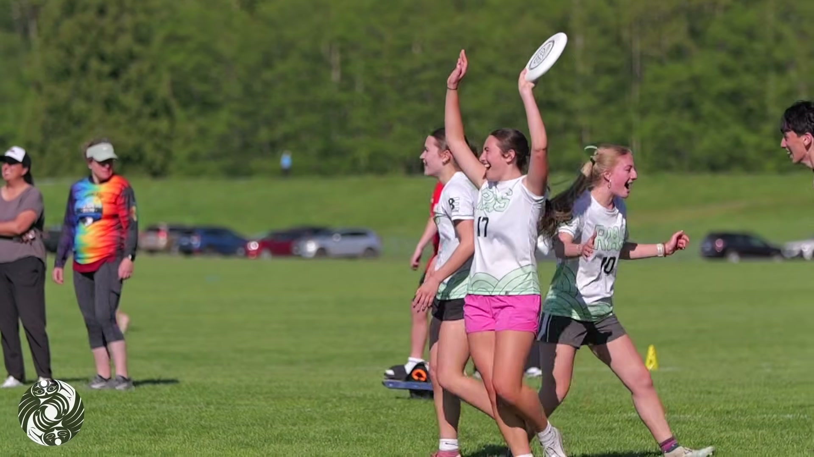
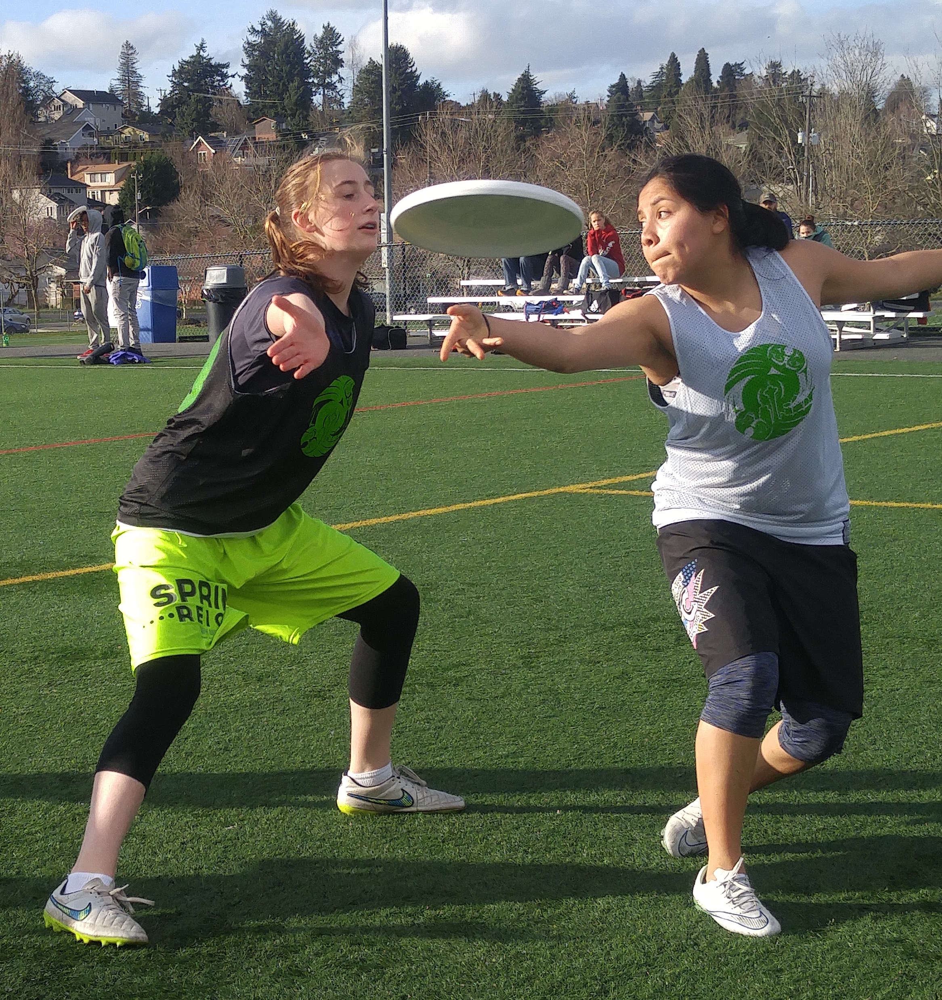

Players
Your next team is one signup away.
Hat league, team league, pickup, or a beach weekend at Sea Plastic — year-round, rec to competitive. Tell us the season and how you like to play; the board tells you if you’re on.
See what’s registeringDiscNW website redesign · Direction 03 of 19
ISSUED 06:12 PST · DISCNW FIELD BULLETIN · GREATER SEATTLE
DiscNW plays through Seattle weather — so the site should read like the region’s most trusted field report. A meteorological bulletin that loves the sport: every field, every condition, every status, set in honest monospace. The proof is in the data. Read straight down the status column and you keep finding the same word — ON.
| Field | Conditions | Status |
|---|---|---|
| MAGNUSON NE | LIGHT RAIN 54°F WND 09SW | ALL GAMES ON |
| 60 ACRES G7–11 | OVERCAST 52°F WND 12S | ALL GAMES ON |
| MARYMOOR 6–9 | DRIZZLE 51°F WND 07SW | ALL GAMES ON |
| LWR WOODLAND TRF | MIST 49°F WND CALM | ALL GAMES ON |
| FORT DENT 3 | WND 24 GUST 31 W | WIND HOLD 20M |
| GENESEE | CLEARING 57°F SUNBREAK | ALL GAMES ON |

Storm light over the Skagit Valley. Six hundred kids played the whole weekend; the weather never got a vote.
02 · The idea
Most league sites treat Seattle weather like an apology. This one treats it like a credential. DiscNW has run games through drizzle since 1995, and the honest local truth is undramatic: it’s about 37 inches of rain a year — less than New York — spread thin across roughly 150 grey days, and it’s the wind, not the rain, that ever moves a game. Rain or Shine builds the whole interface as a field report: a sturdy grotesk for the headlines, real monospace carrying every temperature, timestamp, and condition string, and a live-feeling conditions board at the center. The payoff is quiet and it’s the entire argument — when you read the data honestly, it proves the devotion. Almost every status says ON.
This is data as a love letter. The almanac isn’t here to scare a parent off the field — it’s here to prove we’re already out there, and to make “we play rain or shine” something you can check for yourself at 6 a.m.
03 · Palette
Two grounds do the everyday work — charcoal-slate ink and a cool overcast paper. Green is used like radar: a signal, never a decoration, bright on dark and stepped down for light. One warm break color is reserved for the rare exception. Photographs keep their own color; the palette frames them and never sits on top.
The charcoal-slate of a radar screen at rest. Boards, dark sections, and headline ink.
The cool grey-white of a low sky. The page ground — never a pure white.
Used like radar — live status, on dark only. The word ON, the pulse, the return.
The signal stepped down for light grounds — links, kickers, primary buttons.
The warm break in the overcast. Reserved for the rare exception — a wind hold, a delay.
Secondary text and metadata on light — the quiet reading on the dial.
04 · Typography
A sturdy grotesk carries the headlines with instrument-panel confidence. Then a real monospace takes over every number the site knows — temperatures, timestamps, capacities, condition strings — so the data reads like a live feed, not a caption. Both load from Google Fonts and hold up soaked.
A sturdy grotesk with just enough character to feel engineered, not corporate. Run at 700 with tight tracking for headlines; 500 for large numerals.
The voice of the instrument. Every condition string, field name, temperature, and time is set here, tabular and exact. It is the sound the brand makes.
We play rain or shine.
Rain or shine
Display · Space Grotesk 700 · 52–96pxThree front doors
H2 · Space Grotesk 700 · 30–42pxSummer Mixed Hat League
H3 · Space Grotesk 600 · 22pxBring cleats and a rain shell — the grass will be wet, and that’s the point.
Body · Space Grotesk 400 · 17pxMagnuson NE · 54°F · all games on
Data · IBM Plex Mono 500 · 13.5px05 · Signature element
One device carries the whole direction: an airfield-METAR / ferry-terminal departures panel for league fields, in three columns — FIELD, CONDITIONS, STATUS. It reads live, it tells the truth, and it delivers the joke by simple repetition. Here is a Saturday in April, every site reporting at once.
| Field | Conditions | Status |
|---|---|---|
| MAGNUSON NE | RAIN 50°F WND 08SW | GAMES ON |
| MAGNUSON SW | RAIN 50°F WND 08SW | GAMES ON |
| 60 ACRES G1–6 | OVERCAST 52°F | GAMES ON |
| 60 ACRES G7–11 | DRIZZLE 51°F | GAMES ON |
| MARYMOOR 6–9 | MIST 49°F WND CALM | GAMES ON |
| FORT DENT 1–4 | RAIN 53°F WND 10S | GAMES ON |
| GENESEE UPPER | SHOWERS 52°F | GAMES ON |
| LWR WOODLAND TRF | RAIN 50°F (TURF) | GAMES ON |
FIELD, CONDITIONS, STATUS — a departures-board line for every league site. Rows tick in one after another on arrival, mono digits rolling into place like an odometer, then hold still.
Green means go, and it is the only green on a dark board. A wind hold turns Sunbreak amber; a true rainout would go grey. You will almost never see either — that is the whole point.
The formline mark signs every board like a broadcast station ID — small, consistent, on solid ink with clearspace. Never stretched, recolored, or set over a photo.
Motion rule: the board updates like a real departures panel — a staggered tick per row on the house lux curve, digits rolling odometer-style, then dead still. No looping pulse, no fake refresh spinner. The data is calm because the sport is reliable.
06 · Homepage
The top of the new homepage. A site-wide status ribbon rides under the nav; the hero pairs one clear headline with the live conditions board, because the first question a Seattle player has is always the same — are we on? The answer is right there, and it’s almost always yes.
Ultimate across the Puget Sound region
Leagues, camps, and tournaments for 10,000+ players a year — on wet grass, under grey skies, in the long light of June. Check the board, grab a shell, and come find your team.

Component note: the status ribbon and the board are the same live data at two scales — a glance under the nav, the full read in the hero. The lockup in the nav is the real white asset, undistorted; the formline mark signs the board and the footer as a station ID. The photograph runs clean, full color, captioned on its own plate. Nav labels roll on hover; Register leans up to six pixels toward the cursor.
07 · Front doors
Players, coaches, parents — each gets a door in their own language, a few seconds after the page loads. Photography above, plain words below; the two never fight, and neither pretends the weather is different than it is.
Players
Hat league, team league, pickup, or a beach weekend at Sea Plastic — year-round, rec to competitive. Tell us the season and how you like to play; the board tells you if you’re on.
See what’s registering
Coaches & volunteers
The DiscNW Coaching Collective backs you with trainings, practice plans, and a bench of coaches to lean on — from your first background check to the season’s last spirit circle, rain and all.
Start the coaching checklist
Parents & families
Learn the game in five minutes, get the honest gear list for a wet field, and hear the real answer to “where are the referees?” — there aren’t any, and it’s the best thing about this sport.
Read the field guide
Open grass, low sky, nobody going home. This is what “rain or shine” actually looks like — and it looks like most Saturdays.
08 · Dispatches
The story unit is a field dispatch — one photo, a mono conditions header, one true voice. Beside it, the almanac: the numbers that quietly prove the whole thesis. Data as a love letter, tagged by field and weather so the archive becomes a map of where and when this community plays.

“Six hundred kids played through showers all weekend, and not one asked me when it would stop. At the last huddle every arm went up before I said a word. That’s the part I can’t coach — they learn it from each other.”
37 inches of rain a year
Less than New York — spread thin across roughly 150 grey days. Thin rain doesn’t stop a game; it just tells you what to wear.
Component note: dispatches are 300–500 words with one photo, submitted through a community story form — a sustainable pipeline, not a staff burden. Every almanac figure here is a real regional number, warm-framed. The odometer rolls once on arrival, then holds; reduced motion and print show it already landed on 37.
09 · Working parts
Registration is the site’s day job. These pieces keep it fast and honest — green means “this does something,” capacity reads as a plain bar, and every number wears monospace so it never lies about precision.
Rows show rest / hover. Focus draws a 3px Wet-Season ring (Radar on dark). The primary leans up to six pixels toward the cursor on fine pointers only — touch and reduced motion get the plain button.
10 · Voice & tone
Calm, factual, quietly devoted — a meteorologist who happens to love the sport. It states the weather plainly, then tells you the game is on anyway, because it almost always is.
We play rain or shine.
You’re on the roster for Summer Mixed Hat League. First pull is Monday, June 1 at Magnuson — 5:55 p.m., rain likely, games on. Your schedule lives under your name, top right.
The forecast says rain. So does most of the season, and we play through it — it’s drizzle, not lightning. Send cleats, a warm layer, and a thermos; the sideline will save you a chair.